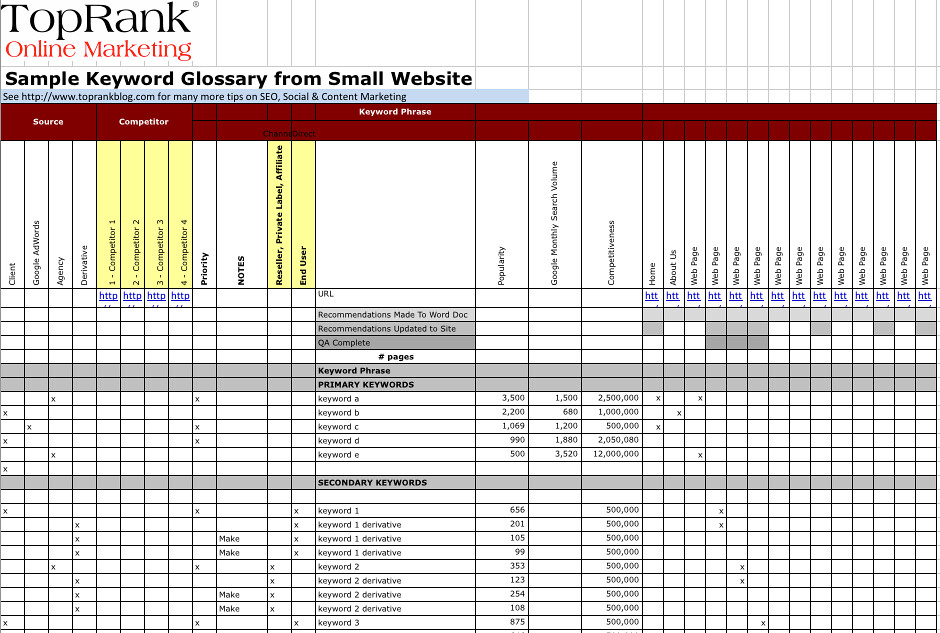

What Are LSI Keywords in SEO and Do They Still Matter?
Learn what LSI keywords are, how they differ from semantic keywords, how to find them in real search results, and how to use them without stuffing a page.
LSI keywords are words that share a topic with a main keyword. A page about coffee holds words like beans, brew and roast beside the main word. When you ask what are LSI keywords in SEO you ask how those words help search engines grasp a page topic.
Many writers repeat the main keyword again and again. Search engines read the repeats and they find no new signals. The page sounds stiff and readers leave fast.
After this guide you will find related words for your own pages. You will place them where they fit and your pages will read with ease. Search engines will grasp your topic.
LSI Keywords Name the Words That Surround a Topic
A topic never lives in one word alone because related words circle it on every page. A guide about bread holds words like flour, yeast and oven in its lines. When you ask what are LSI keywords in SEO you ask how those circling words signal the topic to search engines. Search engines read the whole set and they place the page with confidence.
Related words also help readers because they show the writer knows the subject. A page that names only the main keyword reads thin and it earns little trust. A page that uses the words of the trade reads like an expert wrote it. Readers stay longer and they trust the advice more.
Sara runs a recipe site in Lahore and her biryani guide named only the word biryani. Search engines could not tell whether her guide covered cooking or ordering food. Sara added words like rice, spice and pot to her guide. Search engines then placed her guide with cooking searches and her visits grew.
LSI Keywords Differ From Semantic Keywords in One Clear Way
LSI keywords come from an old method that groups words by how often they appear together. Search engines once used that method to guess a page topic from word patterns. The method looks at word counts and it misses the meaning behind the words.
Semantic keywords cover the ideas and the intent behind a search instead of word counts. A semantic set holds words that share meaning even when they never appear together. When you ask what are LSI keywords in SEO you learn that LSI names the older count method and semantic names the meaning method. Writers today lean on meaning because search engines now read intent.
Omar runs a travel site in Karachi and his tour guide repeated the same related words. His page scored well on word counts and it still missed the searches his travellers typed. Omar rewrote the guide around the ideas his travellers care about. His guide now matches searches for desert trips and city walks.

Find LSI Keywords From Real Search Results
Real search results show the words that search engines link to a topic. Owners type the main keyword into a search box and they read the phrases that appear below it. Those phrases come from real searches and they point to the words readers use.
The related searches at the foot of the results page hold more words for the set. Owners open the top pages for the main keyword and they note the words those pages repeat. A short scan of rival pages often yields a full set of related words.
Ayesha manages a job board in Islamabad and she needed words for her graduate jobs guide. She typed her main keyword into a search box and she read the phrases below it. Ayesha pulled words like freshers, entry level and training from those phrases. Her guide now matches the words that job seekers type How to Find Related Keywords in Search Results.
Use LSI Keywords Without Stuffing a Page
Related words work best when they sit where a reader would expect them. Writers place a related word in a heading or in a line that needs it. A word forced into a line that needs no such word breaks the flow and readers feel it.
Stuffing a page with related words hurts the page because search engines spot the pattern. A page that lists related words without a clear point reads like a word trap. Writers use each related word once or twice and they let the rest of the page breathe.
Bilal owns a furniture store in Faisalabad and his chair page listed every related word he found. His page read like a list and buyers left it fast. Bilal rewrote the page with a few related words in the lines that needed them. His chair page now reads with ease and buyers stay to read the detail.
Semantic SEO Carries the Idea Further Than LSI
Semantic SEO asks what the reader wants to learn instead of which words appear most. A page built on intent answers the full question behind the search. Search engines reward that depth because it serves the reader better than a word count ever could.
A semantic page groups related ideas into sections that each answer one part of the question. The page covers the topic from several angles and it links to deeper guides for each angle. Readers find the full answer in one place and they leave the page glad.
Hira runs a coaching site in Multan and her course guide listed related words without a clear order. Her readers could not find the answer they came for. Hira rebuilt the guide around the questions her learners ask first. Her guide now answers those questions in order and her enrolments rose.
Frequently Asked Questions
What are LSI keywords in simple terms?
LSI keywords are words and phrases that share a topic with a main keyword. Owners who ask what are LSI keywords in SEO learn that those words help search engines grasp a page topic. A page about coffee holds words like beans, brew and roast beside the main word.
Does Google still use LSI keywords?
Google moved past the old LSI method and it now reads meaning and intent behind a search. Related words still help because they show the writer knows the subject. Writers use related words to serve readers and they never chase an old word count trick.
What is the difference between LSI keywords and semantic keywords?
LSI keywords come from an old method that groups words by how often they appear together. Semantic keywords cover the ideas and the intent behind a search instead of word counts. Writers today lean on meaning because search engines now read intent.
What is semantic SEO and how does it relate to LSI?
Semantic SEO asks what the reader wants to learn instead of which words appear most. A page built on intent answers the full question behind the search. LSI names the older count method and semantic SEO carries the same idea further with meaning.
How do owners find LSI keywords for a page?
Owners type the main keyword into a search box and they read the phrases that appear below it. The related searches at the foot of the results page hold more words for the set. A short scan of rival pages adds the words those pages repeat.
How many LSI keywords should a page hold?
A page holds as many related words as the topic needs and no more than that. Writers place each related word where a reader would expect it and they let the rest of the page breathe. A page stuffed with related words reads like a word trap and it loses readers fast.
Can LSI keywords help a page rank for more phrases?
Related words help search engines place a page with more searches that share the topic. A page that covers a topic from several angles matches more reader questions. Owners build that depth with clear sections and they link to deeper guides for each angle.
Do LSI keywords replace the main keyword?
Related words never replace the main keyword because the main keyword still names the page topic. Writers keep the main keyword in the title, the first lines and the headings. Related words support the main keyword and they never push it out of the page.
Pick related words for one page today and learn what are LSI keywords in SEO by watching how search engines read them. Use the words where they fit and lean on meaning over counts. A rich page helps search engines grasp your topic and rank it for more phrases.
Pick three related words for one page today.
How to Do Keyword Research for a New Blog
Related articles
- What Is the Difference Between SEO and SEM, and Which One Should You Choose?
- What Are Dofollow and Nofollow Links in SEO and When Do You Use Each?
- How SaaS Companies Use User Reviews to Win Search Traffic and Signups